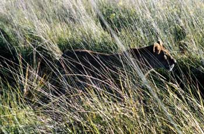

At sunset the Land Rover pulls off by a pan or island to watch the sun disappear behind the flat Botswana horizon while sipping an aperitif. Due to park restrictions, many safaris are unable to offer the magic of an evening game drive. Our obsession with the "big five", elephant, lion, rhino, often blinds us to the small wonders of a honey badger stuck like Pooh bear in the hollow of a tree gorging himself on wild honey or the immense open sky with the constellations clearly visible when removed from the glaring city lights. At around 7:30 p.m. we return to the warm camp "fires" for our evening meal. Although this is a "sit down" affair, dressing for dinner simply means changing your shoes, and perhaps tiding up a bit before being summoned by the drum.
A prelude to every dinner is the recitation of the menu by a Botswana staff member. Such a public display is embarrassing for most of these gentle people. We find theirimperfect command of English charming. I certainlydo not have a clue how to say "baked potatoes in foil" in theSetswana language. After all "foiled baked potatoes" has such a Shakespearean ring. While the food is not gourmet, it is certainly of a high quality. Botswana's neighbor to the south, South Africa, provides the larder for the bush camps from avocados, fresh fruit to wine. The outstanding feature of the dining experience is the table conversation amongst the guests and resident staff. At Chitabe I had the pleasure of meeting Helene and Dave, owners of the camp. Both are professional photographers who have collaborated on "Running Wild", a book devoted to the indigenous local dog population. Naturally wildlife is the common bond which unites a diverse group of people from BBC producers, to wine merchants to attorneys on their honeymoon…. Our leisurely dinner is complete with our retiring to the open camp fire for an Amarula night cap and more fascinating discussions. By about 11:00 p.m. we have all turned in for the night in anticipation of our 6:00 a.m. wake up "drum".
The drum beat announces the dawn and the morning game drive. With a quick breakfast of rusks washed down with roovos tea, we are fortified for our game tracking. Robin and the other drivers have already compared notes. A pride of about fifteen that we had sighted yesterday are in our area again. They are on the move and have a "lean and hungry look". The failure of the pride's ravine ambush of a group of impala drew them to a nearby pan where we watched them drink and "rally the troops". Our cluster of Land Rovers blended into the tall grass surrounding the pan as we observed the pride stalked on either side of the pan. With food on their mind, the females brushed by our Rover, totally oblivious to our presence. As the pride maneuvered their attack position, Chitabe's resident female elephant and her calf gingerly approached the pan for a morning drink. As quickly as they appeared, they faded into the landscape. Next in the drinking line was an elephant herd composed of adults, adolescents and babies clustered in the center of the herd. The herd also sensed danger and drank without lingering before retreating to the bush. Next in line, the Cape buffalo, never made it to the pan. In a split second the pride had attacked from the bush. The cries of a Cape buffalo prompted Robin to rev up the motor and take off through the pan. Underestimating the depth of the water hole, Robin put the pedal to the metal, praying that we would not stall as the water sloshed over the front seat doors. Rivaling any Disney attraction ride, we took off literally over the bush. As we arrived at the clearing the pride had succeeded in overpowering the buffalo. The pride pecking order became evident as the elder matriarchs assumed the prominent center position with the younger lions confided to the animals legs and tail area. Our two male lions were no where to be seen. "You snooze, you lose!" - even in the animal kingdom. Although I am an avid nature program viewer, I was completely overwhelmed and unprepared emotionally for not only the sight of death, but the smells and sounds of the kill. The life-death cycle is so clear. Once the pride have eaten their fill, the other animals, hyena and vultures, move in to devour and return the remains of the bloodied carcass to the sands of the Okavango Delta. With our fill of photos, we return to our own breakfast awaiting us at Chitabe. The kippers and bacon suddenly have a newsignificance for me. After breakfast I reluctantly pack my duffle bag for my next camp, Jedibe Island. At Chitabe's dirt airstrip a few quick souvenir pictures of Robin and our rover mates are interspersed with exchanges of home addresses and promises to visit. Thus ends my first 24 hour day on safari. We our off in ourSefofane bush plane to the next camp where new adventures await us...
Continued on Page 3